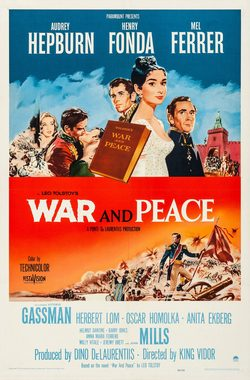

War and Peace

Starring: Audrey Hepburn, Henry Fonda, Mel Ferrer
Director: King Vidor
Writer: Mario Camerini, Ennio de Concini, Ivo Perilli
Producer: Dino De Laurentiis, Carlo Ponti
War and Peace (Italian: Guerra e pace) is a 1956 epic historical drama film based on the 1869 novel by Leo Tolstoy. It was directed and co-written by King Vidor and produced by Dino De Laurentiis and Carlo Ponti for Paramount Pictures.
Trivia
- Won the Golden Globe Award for Best Non-English Language Film.
- Also nominated for: Academy Award for Best Director; Academy Award for Best Cinematography, Color; Academy Award for Best Costume Design, Color.
- Based on War and Peace (1869 novel by Leo Tolstoy).
- British producer Alexander Korda announced interest in adapting Tolstoy's novel for the screen as early as 1941, with Orson Welles directing, Merle Oberon and Agnes Moorehead, with a screenplay by Lillian Hellman.
- Korda's production was never realized, due to an inability to strike a deal with the Soviet government.
- In the 1950s, Mike Todd began actively pursuing a film adaptation, even arranging with Soviet and Yugoslavian officials for filming locations and the massive number of required extras, and hiring Fred Zinnemann to direct.
Filming Locations
- The film was shot primarily at Ponti-De Laurentiis and Cinecittà Studios in Rome, as well as at locations in Rome, Turin, and Sardinia.
Previous Showings
4 Runs • 1 Festival
Original Billings: 1 run (October 24, 1956)
Original Run: October 24, 1956 (Wednesday - Wednesday)
All runs on record (4):
- October 24, 1956 (Wednesday - Wednesday)Audrey Hepburn, Henry Fonda
- February 25 - 26, 1993
- September 18 - 19, 2010
- August 29 - September 1, 2015Summer 2015: Forty Classics from the Golden Age, including Kurosawa in August